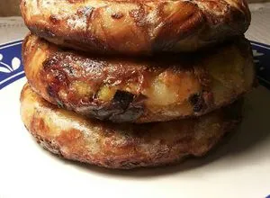

Tortilla de Patatas
Ingredientes
- 5 patatas medianas
- 6 huevos
- 1 cebolla (opcional)
- Aceite de oliva virgen extra
- Sal
Plato elaborado

Elaboración
- Pela y corta las patatas en láminas finas y la cebolla en juliana.
- Fríe las patatas y la cebolla en aceite abundante a fuego medio durante 20 minutos.
- Escúrrelas bien y salpimiéntalas.
- Bate los huevos y mézclalos con las patatas; deja reposar 5 minutos.
- Cuaja la mezcla en una sartén con un poco de aceite, 3 minutos por lado.
- Da la vuelta con ayuda de un plato y sirve templada.
Descarga
Descargar la receta en PDF
Volver al menú